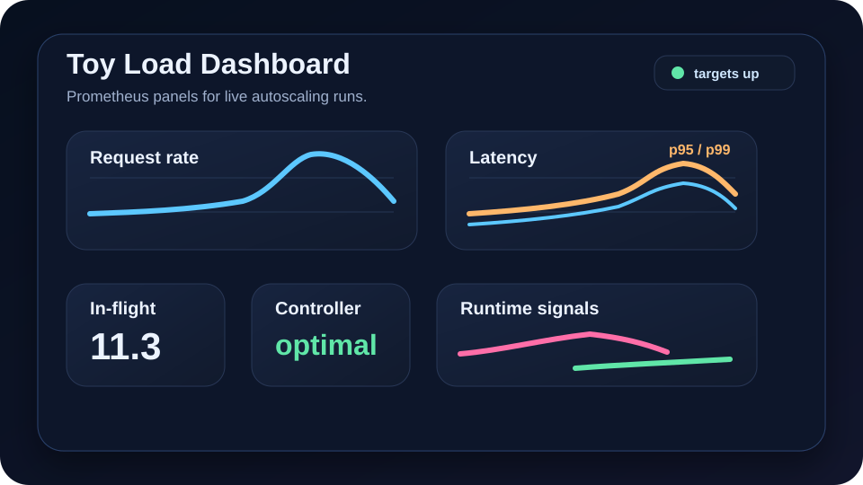
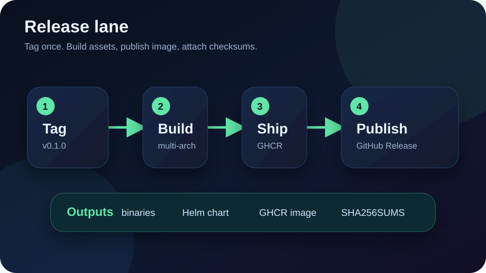
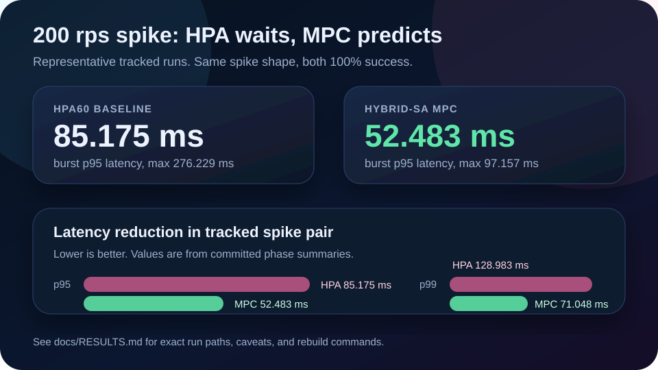
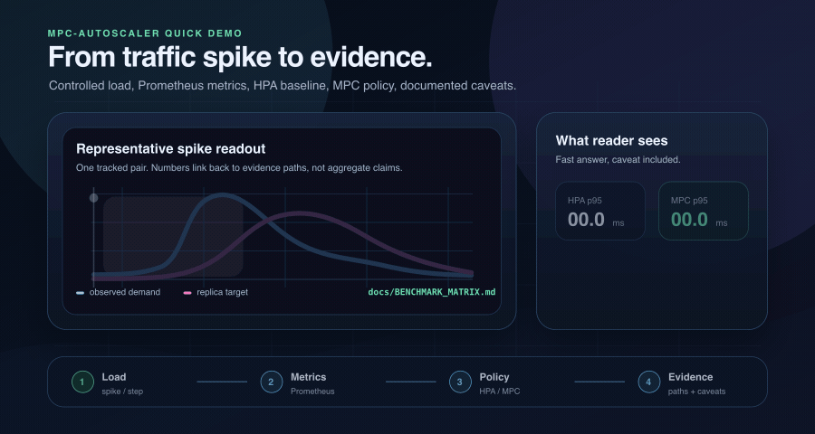

Release v0.1.0
The first public release includes Linux and macOS binaries, Helm package, checksums, GHCR image tags, SBOM, and provenance.
ghcr.io/vshulcz/toy-load:v0.1.0
Lightweight previews only. Raw runs stay out of Git; committed manifests point to curated evidence roots and reproducible rebuild commands.
Each preview points back to source files, release artifacts, or documented evidence roots.



The first public release includes Linux and macOS binaries, Helm package, checksums, GHCR image tags, SBOM, and provenance.
ghcr.io/vshulcz/toy-load:v0.1.0


Published numeric cells stay separate from indexed evidence roots. This makes the current scope useful without implying a full aggregate benchmark.
| Controller | Step | Spike | Seasonality | Status |
|---|---|---|---|---|
| CPU HPA60 baseline | Indexed | Published numeric pair | Indexed | Primary reactive baseline. |
| Hybrid-SA MPC | Indexed | Indexed; supporting run published | Indexed | Primary tuned predictive controller. |
| Proxy-HPA plus safety | Indexed | Indexed | Indexed | Comparator summary still needed. |
| No-QP reactive policy | Indexed | Indexed | Indexed | Comparator summary still needed. |
| Vanilla HPA80 | Indexed | Indexed | Indexed | Comparator summary still needed. |
Full rules and rebuild path: docs/BENCHMARK_MATRIX.md.
Grafana panels are backed by the committed dashboard sources in dashboards/ and the toy-load metrics documented in toy-load/README.md#metrics.
| Panel | Metric source | Use |
|---|---|---|
| Request rate | rate(toy_http_requests_total{path="/work"}[1m]) | Tracks workload throughput during step, spike, and seasonality runs. |
| Errors | toy_errors_total and non-2xx toy_http_requests_total | Shows injected application failures and failed request responses. |
| Latency quantiles | histogram_quantile(... toy_http_request_duration_seconds_bucket) | Compares p95 and p99 response latency across controller policies. |
| In-flight requests | toy_in_flight_requests | Highlights queueing pressure while demand changes. |
| CPU | container_cpu_usage_seconds_total and HPA CPU utilization | Explains the reactive signal that drives the CPU HPA baseline. |
| Memory | container_memory_working_set_bytes | Checks pod resource behavior during load-generator scenarios. |
| Alias | Role | Scenarios | Notes |
|---|---|---|---|
thesis/main/hpa60_cpu_hpa_max70 | Primary baseline | step, spike, seasonality | CPU-HPA60 baseline under max70 comparison setup. |
thesis/main/hybrid_sa_max70_tuned | Primary MPC | step, spike, seasonality | Final tuned Hybrid-SA root used for corrected thesis results. |
thesis/comparator/proxy_hpa_safety_max70 | Comparator | step, spike, seasonality | Reactive proxy-HPA plus safety comparator. |
thesis/comparator/no_qp_reactive_max70 | Comparator | step, spike, seasonality | No-QP reactive comparator. |
thesis/comparator/vanilla_hpa80_max70 | Comparator | step, spike, seasonality | Vanilla HPA80 comparator. |
Source map: experiments/EVIDENCE_MAP.csv.